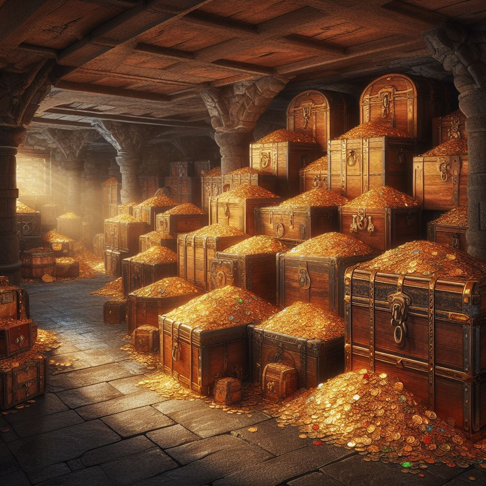

“Consegiu pasar la barrera, conforme passeu es tanca d’una forma violenta. Es gireu cap al castell. Jurarieu que feia bon temps abans d’entrar en la barrera, pero ara hi ha un cel tapat per nuvols de tormenta."
Si no han atacat a Linlon (Si l'han atacat, pues pasa al seguent parrafo, al que diu)
"Veieu com Linlon, també está amb vosaltres."
Linlon: "Ojojojo!! Pareix que la barrera está no mos dixará ixir. I no me queden pedres de permatrago... Pa anarmosen deuriem trencar alló que fa que la barrera estiga ensesa. Si necesiteu algo, jo tinc tot el que necesiteu!!
"No veieu cap enemic pero sentiu com si estagueren observant-vos desde tots els llocs. Entreu al castell, les portes s’obrin sorprendentment fácil."
“Entreu a la planta baixa del castell, veieu un pasillo que du a una especie de zona oberta amb un gran pilar en mig. Als dos costats hi han dos habitacions.”
Si entren en alguna de les habitacions.
“Entreu a una sala plena de espases, escuts, pintures, mobles de calitat, ben ilumniada amb molts ciris. Al principi de la habitació hi han dues armadures de caballer als costats i veieu un tresor al final de la sala.”
Si toquen una armadura: Les armadures cobren vida y el cofre també. Comensa la lluita.
1 mimico i 2 armadures
“Deus meus, les armadures están vives, estes es posen de forma estrategica per a bloquejar l’entrada, i per si fora poc el cofre era un mimico, una criatura que imita els cofres per a atacar als aventurers”.
-Si van al cofre e intenten obrirlo: els ataca i els fa 30 de mal. Comensa la lluita.
“Era una trampa!! Un mimic, una criatura que es disfrasa de cofre per a atacar als aventurers. Per si fora poc les armadures cobren vida i bloquejen la porta.”
Quan arriven a la sala gran
“Arriveu a la sala gran, un gran pilar en el centre amb una inscripció de pedra que diu: “pecunia
purgat animam” Els diners netejen l’anima. Tots els mobles de l’habitació (taules, caires,
candelabros, estanteries, cuadres) pareixen ser de or masis. Hi han 5 armadures encantades(+2 per cada NPC en grup) seguintvos
amb la mirá. Alsen les espases i es posen a moures.
(Si intenten agafar algún objecte este explota inflingint 30 de dany)
si intenten baixar al sotano.
“Una forsa extranya protegix la porta del sotano... te pinta de que algo ho alimenta i es inpenetrable”.
“Pujeu les escales i arriveu a una sala, esta está buida, al final de la sala hi ha unes portes grans de metall, Al acostarvos veieu que al costat de les portes hi ha un taulell amb tres puzzles, al pareixer es necesitará solucionarlos per a poder obrir les portes.""
1 puzzle
Hi han dos formes de mans, un a cada costat de les portes, es nesesitarán dos juaors. Quan poseu les mans en cada marca, una barrera magica creua l’habitació de part a part, esta barrera no es pot atravesar i no sentiu res de lo que diuen els vostres companys del atre costat. Cadacú recibix una imatge mental d’un animal del joc. Per mitjant de la mimica degeu de acertar el del altre.
Dreta: Mípalo.
Esquerra: Conejacón
*Quan acerten el de l’atre la seua marca s’ilumina. (si tenen molt de problema el master pot ajudar)
Quan el solucionen. S’ensen 1 llum del puzzle.
2 puzzle
“S’obri un portal mágic, pareix ser que el segon puzzle te algo que vore amb este. Si voleu resoldrel tindreu que tindre sort”
*Cada u que atravesa el portal tira un dau:
1-Apareix en una sala amb una palanca. Si l’estira es completa el puzzle.
2-Apareix en una sala plena de Oatbluffs, fa una pudor bestial, tarda 1 turno (el seu seguent) en ixir
3-Apareix en una sala plena d’enemics, pero son falsos (es una broma).
4-Apareix en una sala plena de portals que el reconduixen a la mateixa sala. (te que acertar un
número del 1 al 20, el que pense el Master)
5-Apareixen en una sala plena d’objectes d’or que exploten, el master dibuixa un mini laberinto i
una ruta de la cual si se ix, li explota un objecte -20 de vida. El juaor te que anar amb els ulls tancats
i els demes guiarlo.
6-Es troven en una versió d’ells mateixa i tenen que lluitar contra ells mateixa (el clon te la mitat de
les seues habilitats i dropeja una poció de vida gran)
3 puzzle
“Es sent una veu mecanica que vos diu una endevinalla, per a completar el puzzle heu de contestar correctament”
“Si me gites ho soc tot, si me talles per la mitat no soc res.”
Resposta, es un 8. gitat es el infinito, tallat per la mitat son dos zeros, si no heu saben pista: es un número.
Amb la tercera llum s’obrin les portes i poden pasar al laboratori de Mellmidok.
“Entreu al laboratori de Mellmidok, hi han uns grans tubos de cristal al llarg de la sala. Molts están trencats, pero en aquells que no ho están podeu vore gestantse unes besties mutants molt lleges, de aspecte cuadruped, una boca plena de de dents, peludes de color taronja, sense ulls i amb unes pedres incrustrades alrededor del coll.”
“Les taules están plenes de papiros, llibretes de paper, i frascos amb sustancies. També es pot vore algún invent una mescla de alta ingenieria i magía arcaba. Estava clar que Mellmidok era un erudito molt avansat al seu temps.”
“Sentiu un soroll com de algo trencantse. Vegeu com un grup de 5 besties mutants (+2 per cada NPC en el grupo) ixen dels seus amagatalls, grunyint i babetjant cap a vosaltres.”
“Arriveu al últim pis del castell els aposents de Mellmidok, entreu i veieu un llit, un escriptori amb un diari i en mig de l’habitació un pedestal de pedra que te damunt una esfera de cristal morat que emana una energia oscura que vos provoca un mareig, un malestar evident, al fons, en el cantó contrari de on están les escales vegeu un cristal magic gegant blau el qual es el generador de tota barrera mágica del castell.”
“L’esfera comensa a soltar descarregues electriques i d’aquesta ix una especie de cadaver momificat, amb una bata de laboratori oberta, du una barba blanca llarga i amb unes ulleres trencades. Desde la esquena d’aquest cadaver sobreix la seua anima, un espectre consumit per la magia negra. Es Mellmidok l’amo del castell i del corral.”
1 mellmidok
“El cadaver es dona uns quants pasos i el espectre que li sobreix vos ataca extengentse com si fos de goma, per sort per a vosaltres golpeja un poc abans de on esteu vosaltres, pero algo vos diu que no tornará a fallar. Mellmidok solta un xillit d’ultratomba”.
Una volta derroten a Mellmidok
“Conforme li doneu l’ultim colp, la esfera estalla i l’energia oscura viatja cap al cel destruint el techo fent tremolar tot el castell. L’esperit de Mellmidok es separa del seu cos putrefacte i es neteja d’oscuritat. Aquest vos fa una reverencia amb el cap i utilitza el seus poders fantasmals per a acostarvos el diari de damunt del seu escriptori. Finalment vos senyala el cristal de la barrera mágica i s’esvaix viatjant finalment al mes enllá.”
sols van a poder anar al sotano si destruixen el cristal, també per a ixir si no tenen la pedra de permatrago, una vegá el maten poden llegir el diari o anar directe al sotano a per el tressor.
Diari de Mellmidok
“Avui he tornat de la reunió anual de magia i tecnología. Diuen que les meues idees son bones, pero un miner de Rocksmith mai podrá posar en práctica res. Es així com funciona el mon, pero en el sueldo que guanye en la mina apenes m’arriva per a menjar. He de conseguir dines, no puc permitir que les meues idees es perden. Puc oferir molt a aquest mon, pero necesite diners.”
Entrada 10
“He estat amagantme trosos de metall per a fundir, el cual ha fet que no guanye el suficient per a comprar tant de menjar com necesitaría. Avui m’he desmayat en la mina, quan he despertat estava fora. He convensut a Ogg Alban per a poder fundir el metall en la seua forja. Una volta he coseguit fundirlo i obtindre les peces necesaries per al meu primer invent lil he montat davant d’ella. Unes pinces extensibles per a poder agafar del foc de la forja els metalls d’una forma mes segura.” “A Ogg Alban se li han obert els ulls com a plats i m ́ha pagat 1 d’or per elles. Mai havia tingut en les mans una moneda d’or. Es seu color es casi hipnotic. Ara que tinc diners, puc posar en práctica més idees. Quan mes guanye millor podré viure, s’acabara el pasar fam.”
Entrada 25
“Vaig fer altres pinces i les vaig vendre al ferrer de Salimar. Ultimament he estat juant amb la alquimia. M ́he donat conter que les pocions que els venen als aventurers sols els cicatricen les ferides, amb una dosis correcta de valeriana, llet de mípalo i un lleuger extracte de la belladama, correctament cuit, he creat una poció que no sols cura les ferides sino que no dixa marca d’aquestes. Els comerciants de tota la regió me la están comprant a 3 de bronce la poció. Pareix poc pero soc l’únic proveedor d’aquesta poció. He guanyat suficients diners com per a comprarme el castell abandonat que está passant el cementeri. Allí podré treballar en els meus experiments. Pero encara no tinc els diners suficients per a tot el que vuic fer. Necesite més.”
Entrada 42
He reunit un tressor digne d’un rei. Pero ara em preocupa la mort, he estat tosint sang, tal volta ha sigut per no parar ni a descansar. Tal volta algún dels meus experiments m’ha pasat factura. Deuria parar pero el meu cap no para de tindre idees. Estic apunt de conseguir crear l’essencia de transmutació definitiva, capaç de transformar cualsevol objecte en or. Per ara sols he conseguit que lo que transmuta es convertisca en or pero i si el toques explote. Estic segur que la clau per a obtindre una font de riquesa infinita está en la propia vida, he capturat unes cuantes besties i estic experimentant amb elles. A pendre per cul la ética, amb diners no necesitaré res mes de que preocuparme mai mes, sumantli a aixo el meu proxim invent podré seguir inventant coses per sempre.
Entrada 51
L’enfermetat ha anat a mes, apenes tinc forses per a mourem, tusc sang cada dos per tres i em costa respirar per sort ja ho tinc tot preparat. Avui comensaré el ritual de la ressurrecció. Sols he de fusionar la meua anima amb l’esfera morada. Ha estat consumint energía de essers vius, per lo que una volta acabe el ritual, seré inmortal i podré acabar la meua obra magna, l’essencia de la riquesa infinita. No mes patiment, no mes fam, sols diners, poder i fama mundial.
Quan arriven al sotano
“Obriu les portes del sotano i baixeu, els vostres ulls s’obrin com a plats, tot el sotano está ple de cofres oberts arreplets de monedes d’or. Literalment hi ha or com per a edificar una ciutat entera. Sabeu que no vos faltarán diners ni a vosaltres, ni als vostres fills, ni als fills dels vostres fills. Enhorabona heu guanyat!!”
